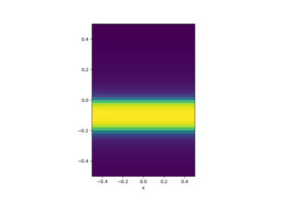
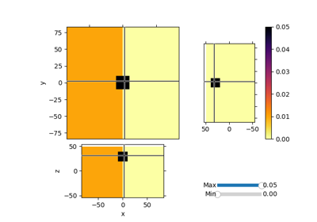
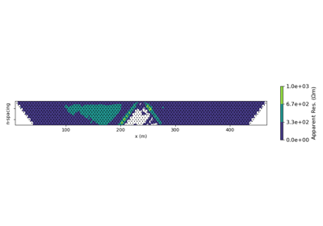
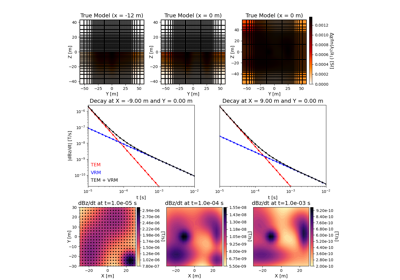
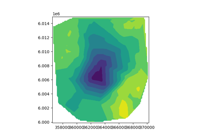

Gallery#
Mappings#



Maps: Parametrized Layer
Maps: Mesh2Mesh

Maps: ComboMaps
Gravity#

Magnetics#
PF: Magnetics: Analytics


DC Resistivity and Induced Polarization#



Reading and Plotting data with DC.IO class
Reading and Plotting data with DC.IO class
Frequency Domain Electromagnetics#
Simulation with Analytic FDEM Solutions
Simulation with Analytic FDEM Solutions

Time Domain Electromagnetics#
Simulation with Analytic TDEM Solutions
Simulation with Analytic TDEM Solutions

Time-domain CSEM for a resistive cube in a deep marine setting
Time-domain CSEM for a resistive cube in a deep marine setting


Natural Source Electromagnetics#
MT: 3D: Forward
Viscous Remanent Magnetization#

Predict Response from a Conductive and Magnetically Viscous Earth
Predict Response from a Conductive and Magnetically Viscous Earth

Method of Equivalent Sources for Removing VRM Responses
Method of Equivalent Sources for Removing VRM Responses
Richards Fluid Flow#


PGI: Petrophysically and Geologically guided Inversion#

Petrophysically guided inversion (PGI): Linear example
Petrophysically guided inversion (PGI): Linear example

Petrophysically guided inversion: Joint linear example with nonlinear relationships
Petrophysically guided inversion: Joint linear example with nonlinear relationships
In Publication#

Heagy et al., 2017 1D RESOLVE and SkyTEM Bookpurnong Inversions
Heagy et al., 2017 1D RESOLVE and SkyTEM Bookpurnong Inversions

Heagy et al., 2017 1D RESOLVE Bookpurnong Inversion
Heagy et al., 2017 1D RESOLVE Bookpurnong Inversion



PF: Gravity: Laguna del Maule Bouguer Gravity
PF: Gravity: Laguna del Maule Bouguer Gravity